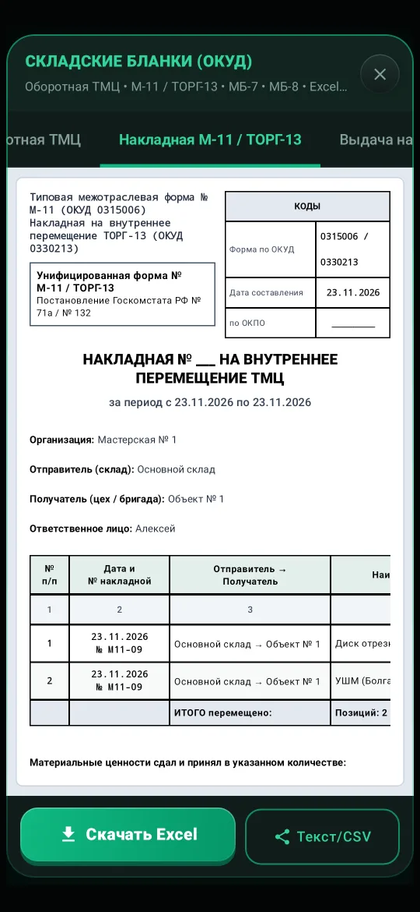

Когда оформляется требование-накладная М-11 и при чём тут ТОРГ-13
Форма № М-11 (ОКУД 0315006) — основной внутренний документ для передачи материальных ценностей между кладовыми, цехами, бригадами и строительными объектами. В отличие от сторонней отгрузки, собственник имущества не меняется, но меняется материально ответственное лицо и место хранения.
Для торговых точек и товарных остатков в паре с ней используют ТОРГ-13 (ОКУД 0330213). В гражданском профиле Каптёрка PRO 4.0 оба формата поддерживаются прямо из мобильного учёта.
Как устроен экран отчётов М-11 в версии 4.0.0

- Шапка накладной: номер документа, дата, отправитель (склад № 1), получатель (цех, объект или точка № 2), «Через кого».
- Табличная часть: наименование материала, корректная единица измерения (
шт.,л.,уп.,м), количество затребованное и отпущенное. - Блок подписей: «Затребовал», «Разрешил», «Отпустил», «Получил» — готово к печати на листе А4 без ручной правки рамок.
Почему в телефоне не возникает пересортицы и двойного расхода
Частая ошибка при ведении тетради или разрозненных файлов Excel — записать «расход» с основного склада и забыть поставить «приход» на объект. В результате по документам материал ушёл, а на деле лежит в машине бригады.
В Каптёрка PRO 4.0 перемещение проводится одной операцией: вы выбираете Откуда → Куда и количество. Баланс на месте хранения корректируется мгновенно, на обоих телефонах команды по QR-контуру обновляется статус, а накладная М-11 формируется ровно по фактическому движению.
Как получить готовую накладную за 1 минуту
- Если нужно выписать разовую накладную прямо сейчас — откройте бесплатный онлайн-конструктор бланков на главной странице, выберите «М-11» и скачайте
nakladnaya-m11.xlsx. - Для постоянного учёта на складе установите приложение на Android — первые 3 дня открыты все отчёты (М-11 / ТОРГ-13, МБ-7, МБ-8, оборотная ТМЦ), далее остаётся бесплатный базовый офлайн-режим.
- Проводите выдачу и перемещение на месте без интернета, а в конце смены выгружайте накладную в Excel одной кнопкой.